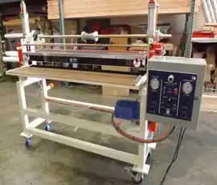

Laminators, Coaters, Applicators and Web Converting Equipment
-


WALCO Industrial Coating Equipment, Glass Coating Equipment,
UV Coating MachinesWhy is Walco, Inc. the leading Industrial Coater machine manufacturer? Because Walco has been building simple, robust laminators, coaters and applicators for more than 61 years and have over 10,000 Walco, Inc. in use in 59 countries. In fact, Walco has more industrial coating systems in operation worldwide than any other coating equipment company.
Walco’s industrial coating systems deliver decades of reliable, honest service to glass, paper, wood, foam, plastics, leather and cabinet manufacturers, as well as the steel, UV coating and converting industries.
Walco machines easily coat adhesive onto a vinyl or paper web, pre-dry the adhesive and then laminate it onto panels of various substrates, including gypsum board, particleboard, fiberboard, and plywood. Durable, robust and reliable, Walco machines handle a full range of industrial coating needs, including high volume, direct and indirect, and more complex coating applications.
As a top level coating machine manufacturer, Walco excels at developing complete, fully automated production lines, enabling all of a customer’s coating and laminating machinery to work together seamlessly as one unit. Industrial strength coating, UV coating and glass coating equipment and applicators from Walco can be customized to fit any sizing configuration and unique environment. For example, a customer in Dubai selected Walco’s Spandrel Glass Roll Coater for its ability to perform in harsh desert conditions.
Because each unit is tailored for the specific customer requirements, Walco’s Direct, Indirect, Reverse Roll and UV coating machines are superior in their range and product versatility.
Walco Machines:
- Apply smooth spandrel coatings to architectural glass both economically and consistently
- Allow users to successfully apply various coating materials to a wide variety of stock
- Offer options of sheet feeding or roll feeding of both soft and rigid stock
- Coat precisely measured amounts of any needed coating, including UV sensitive coatings
With all Walco Roll Coater Machines- Safety is first. Many standard safety features are included on every Walco machine.
Walco Roller Coaters Roll Coater Machines Product Line
Walco Machines enable users to coat materials of almost any kind to a wide variety of stock. Precision adjustments allow exact metering of the coating liquid for uniform coating, saving time and money. Both soft and rigid stock can be sheet fed or roll fed. Choose from: